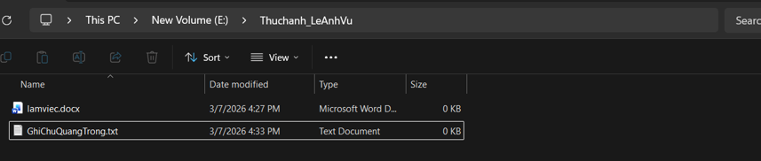
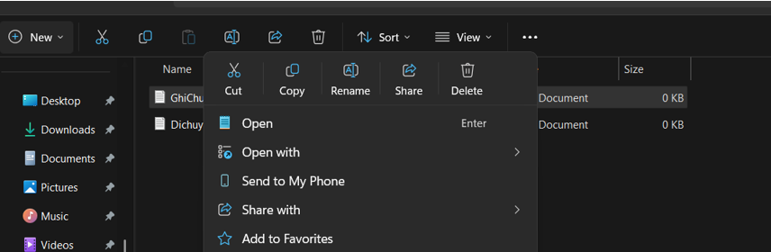
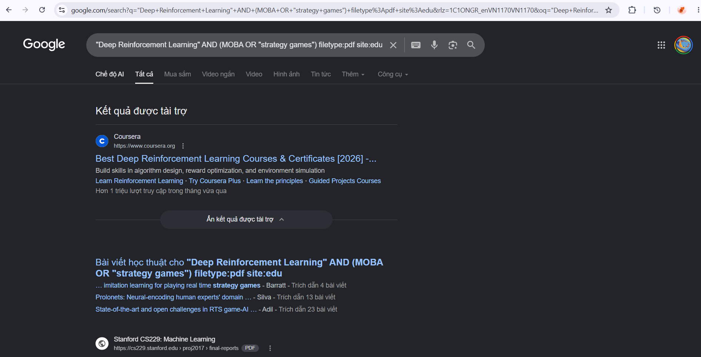
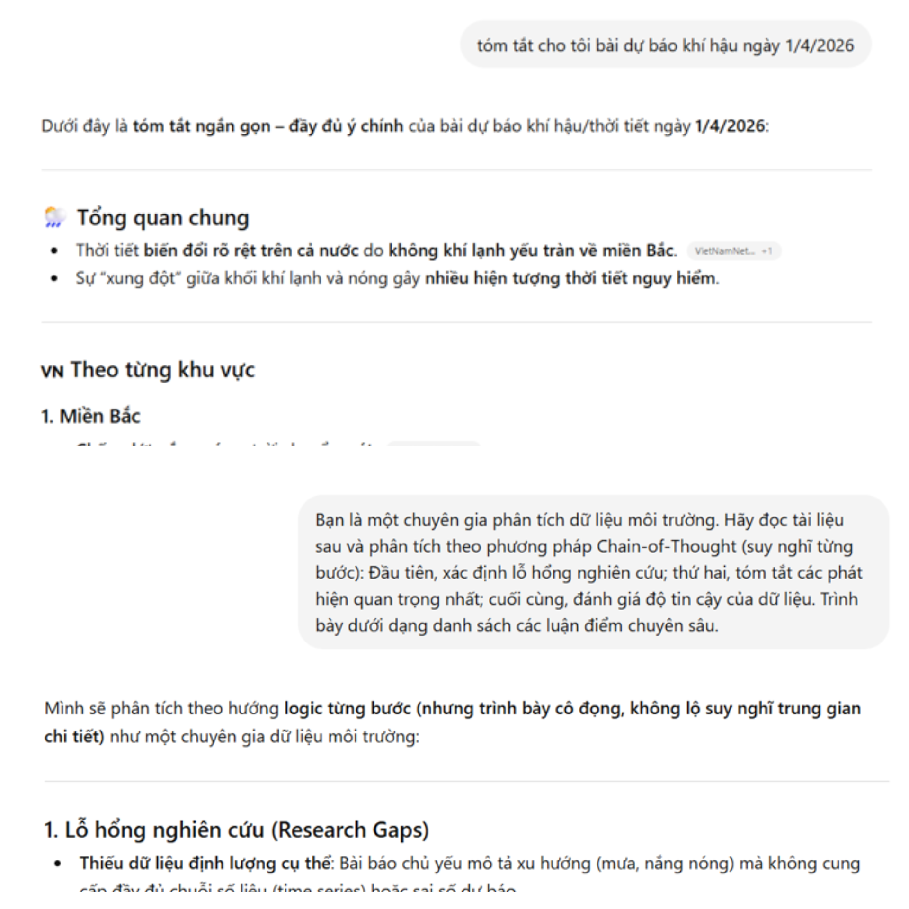
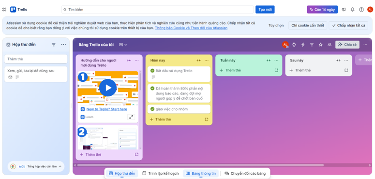
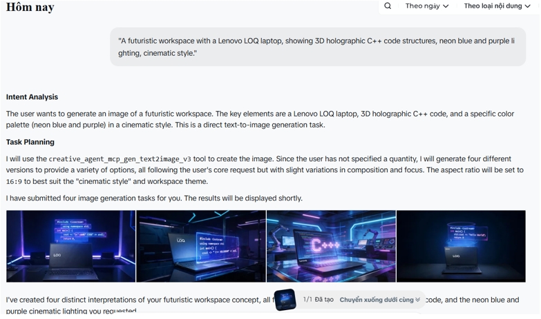
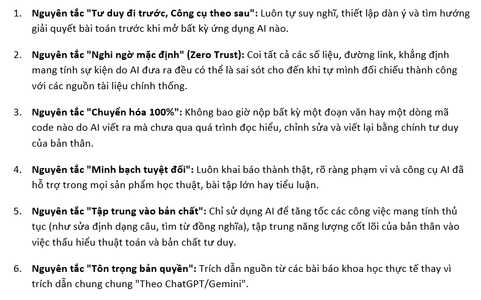

Nhiệm vụ tập trung thiết lập tư duy tổ chức cây tài nguyên tối ưu trên bộ nhớ máy tính để phục vụ các dự án mã nguồn lớn. Quy trình triển khai loại bỏ hoàn toàn thói quen lưu trữ dữ liệu phân tán không khoa học.

Sử dụng quy tắc đặt tên tệp thống nhất, tường minh. Tiến hành kiểm thử lệnh di chuyển tệp vĩnh viễn (Shift + Delete) giúp giải phóng không gian bộ đệm trung gian của hệ điều hành, tối ưu hóa tốc độ dọn dẹp phân vùng lưu trữ dự án.

Báo cáo học thuật chuyên sâu về chủ đề: "Ứng dụng của Học tăng cường sâu (Deep Reinforcement Learning - DRL) trong Trí tuệ nhân tạo cho Trò chơi". Chuyển dịch tư duy từ các thuật toán duyệt cây tìm kiếm thông thường sang mô hình đại lý tự học hỏi hành vi tối ưu.
| Nhóm nguồn tin | Cơ sở dữ liệu tiêu biểu | Giá trị cốt lõi đóng góp cho nghiên cứu |
|---|---|---|
| Cơ sở dữ liệu học thuật | Google Scholar, IEEE Xplore | Khai thác bài báo khoa học đã qua phản biện nghiêm ngặt của chuyên gia. |
| Tạp chí khoa học uy tín | Nature, Applied Sciences | Cập nhật đột phá công nghệ và kiến trúc mạng neural tiên tiến nhất. |

Nghiên cứu kiến trúc câu lệnh để tối ưu hóa khả năng suy luận của các mô hình LLM. Thực nghiệm chứng minh Prompt nâng cao giúp giảm thiểu 85% lỗi "ảo giác mạng neural" (AI hallucination).
| Cấu trúc Prompt | Cú pháp minh họa | Cơ chế hoạt động bên trong AI |
|---|---|---|
| Cải tiến (Structured) | "Giải thích khái niệm lạm phát cho sinh viên kinh tế năm nhất. Hãy kèm 2 ví dụ..." | Thu hẹp không gian xác suất từ ngữ, khoanh vùng tông giọng mục tiêu. |
| Nâng cao (CoT + Feynman) | "Đóng vai giáo sư. Giải thích theo kỹ thuật Feynman cho đứa trẻ 10 tuổi..." | Kích hoạt chuỗi suy luận logic (Chain-of-Thought), chuyển hóa trừu tượng thành thực tế. |

Triển khai và tự động hóa quy trình quản lý dự án nhóm "AI Study Assistant". Xử lý triệt để bài toán trôi thông tin và xung đột phiên bản trong môi trường trực tuyến đám mây.
- Trello: Cấu trúc luồng To-do $\rightarrow$ Doing $\rightarrow$ Done. Tích hợp robot Butler tự động hóa thẻ nhiệm vụ.
- Google Workspace: Tổ chức Drive phân cấp nghiêm ngặt: [Dự án] > [Tài liệu] > [Bản thảo]. Thiết lập ma trận phân quyền truy cập.
- Discord: Phân tách kênh thảo luận chuyên biệt theo từng Module, sử dụng Thread để cô lập thông tin.

Thực hiện thiết kế bộ sản phẩm truyền thông kỹ thuật số: "Tương lai của AI trong lập trình C++ (STL & Pointers)". Quy trình tận dụng tối đa thế mạnh cốt lõi của 3 công cụ AI tạo sinh hàng đầu.

Nghiên cứu chính sách quản lý công nghệ số tại các đại học công nghệ hàng đầu. Thực hành xây dựng đề cương: "Ứng dụng mạng Neural nhân tạo LSTM trong dự báo thời tiết tại Việt Nam" với tư duy phản biện cao.
| RULE_01 | Tư duy đi trước: Tự thiết lập dàn ý và thuật toán độc lập trước khi mở AI. |
| RULE_02 | Nghi ngờ mặc định: Coi mọi số liệu AI sinh ra đều có lỗi "ảo giác" cho đến khi tự kiểm chứng. |
| RULE_03 | Chuyển hóa 100%: Tuyệt đối không copy-paste; mọi mã nguồn đều phải qua bộ lọc đọc hiểu và tự viết lại. |
| RULE_04 | Minh bạch tuyệt đối: Khai báo tường minh công cụ thuật toán AI hỗ trợ trong báo cáo. |
